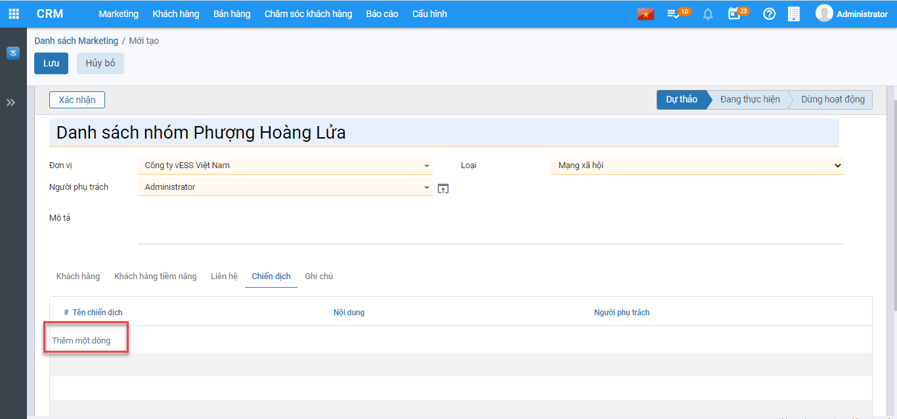
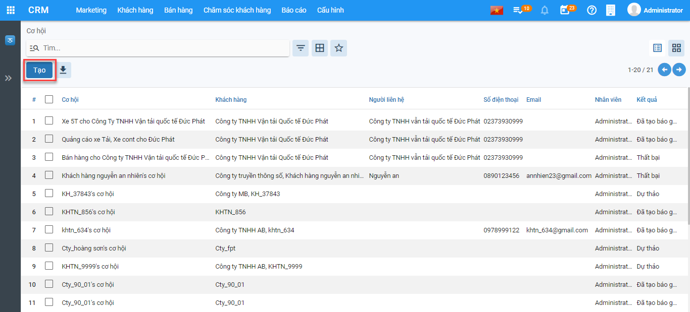
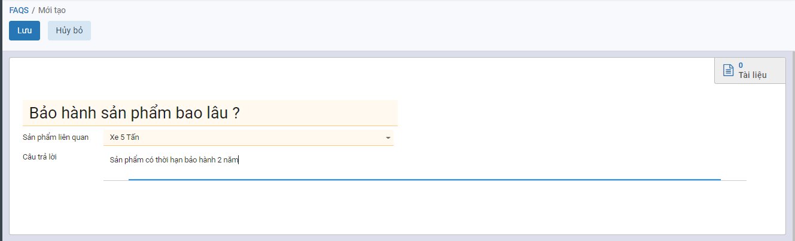

CRM
CRM giúp doanh nghiệp tương tác với khách hàng và xây dựng mối quan hệ lâu dài. Cho phép doanh nghiệp thu thập, phân tích, chỉnh sửa và lưu trữ thông tin về khách hàng tiềm năng và khách hàng hiện tại.
Đồng thời, giúp doanh nghiệp tạo ra các chiến dịch tiếp thị phù hợp, nâng cao hiệu quả hoạt động và thúc đẩy doanh số.
Cấu Hình
Thực hiện hướng dẫn cách thức thực hiện về các Danh mục cần khai báo trên CRM. Việc khai báo các Danh mục có thể được thực hiện tại bất kỳ thời điểm nào tùy thuộc người sử dụng: có thể trước thời điểm nhập chứng từ hay thực hiện được ngay tại thời điểm nhập chứng từ.
Loại Khách Hàng
Mục đích
Danh mục Loại khách hàng dùng để phân loại khách hàng theo từng nhóm chính.Các khách hàng được phân vào một nhóm nếu có chung tính chất hay đặc điểm nào đó.
Chức năng Danh mục Loại khách hàng được quản lý tập trung tại phần Cấu hình
Các bước thực hiện
Bước 1: Vào Cấu hình: chọn Loại khách hàng và nhấn nút Tạo

Nhập thông tin Loại khách hàng được hiển thị để người dùng khai báo

Bước 3: Nhấn nút Lưu
Nguồn hình thành
Mục đích
Danh mục Nguồn hình thành dùng để phân loại khách hàng được hình thành từ nguồn nào để thống kê, đánh giá và quản lý việc Maketing hiệu quả.
Chức năng Danh mục Nguồn hình thành được quản lý tập trung tại phần Cấu hình
Các bước thực hiện
Bước 1: Vào Cấu hình: chọn Nguồn hình thành và nhấn nút Tạo

Thông tin Nguồn hình thành được hiển thị để người dùng khai báo

- Nguồn: Nhập các Nguồn hình thành
- Có hiệu lực: Mặc định bằng True
Bước 3: Nhấn nút Lưu
Loại tiềm năng
Mục đích
Danh mục Loại tiềm năng dùng để phân loại, đánh giá các khách hàng tiềm năng để đạt hiệu quả trong Maketing.
Chức năng Danh mục Loại tiềm năng được quản lý tập trung tại phần Cấu hình
Các bước thực hiện
Bước 1: Vào Cấu hình: chọn Loại tiềm năng và nhấn nút Tạo

Thông tin Loại tiềm năng được hiển thị để người dùng khai báo

- Loại tiềm năng: Nhập thông tin Loại tiềm năng
- Có hiệu lực: Mặc định bằng True
Bước 3: Nhấn nút Lưu
Ngành nghề
Mục đích
Danh mục Ngành nghề dùng nhóm và phân loại ngành nghề của khách hàng tiềm năng để đạt hiệu quả trong Maketing.
Chức năng Danh mục Ngành nghề được quản lý tập trung tại phần Cấu hình
Các bước thực hiện
Bước 1: Vào Cấu hình: chọn Ngành nghề và nhấn nút Tạo

Thông tin Ngành nghề được hiển thị để người dùng khai báo

Người dùng khai báo Tên ngành nghề
Bước 3: Nhấn nút Lưu
Số nhân viên
Mục đích
Danh mục Số nhân viên dùng nhóm và phân loại mô hình công ty của khách hàng doanh nghiệp để đạt hiệu quả trong Maketing.
Chức năng Danh mục Số nhân viên được quản lý tập trung tại phần Cấu hình
Các bước thực hiện
Bước 1: Vào Cấu hình: chọn Số nhân viên và nhấn nút Tạo

Thông tin Số nhân viên được hiển thị để người dùng khai báo

Người dùng khai báo Số nhân viên
Bước 3: Nhấn nút Lưu
Đánh giá
Mục đích
Danh mục Đánh giá dùng nhóm và phân loại tiềm năng khách hàng.
Chức năng Danh mục Đánh giá được quản lý tập trung tại phần Cấu hình
Các bước thực hiện
Bước 1: Vào Cấu hình: chọn Đánh giá và nhấn nút Tạo

Thông tin Số nhân viên được hiển thị để người dùng khai báo

Người dùng khai báo thông tin Đánh giá
Bước 3: Nhấn nút Lưu
Cấu hình giai đoạn
Mục đích
Danh mục Cấu hình giai đoạn giúp người dùng xây dựng quy trình quản lý bán hàng.
Chức năng Danh mục Cấu hình giai đoạn được quản lý tập trung tại phần Cấu hình
Các bước thực hiện
Bước 1: Vào Cấu hình: chọn Cấu hình giai đoạn và nhấn nút Tạo

Thông tin Cấu hình giai đoạn được hiển thị để người dùng khai báo

Người dùng khai báo thông tin Cấu hình giai đoạn và Trình tự
Bước 3: Nhấn nút Lưu
Lý do thất bại
Mục đích
Danh mục Lý do thất bại giúp người dùng có thể gom nhóm và phân tích lý do thất bại để có thể phục vụ cho công tác Maketing và bán hàng hiệu quả.
Chức năng Danh mục Lý do thất bại được quản lý tập trung tại phần Cấu hình
Các bước thực hiện
Bước 1: Vào Cấu hình: chọn Lý do thất bại và nhấn nút Tạo

Thông tin Cấu hình giai đoạn được hiển thị để người dùng khai báo

Người dùng khai báo thông tin Lý do thất bại
Bước 3: Nhấn nút Lưu
Đội bán hàng
Mục đích
Danh mục Đội bán hàng quản lý, xây dựng đội ngũ bán hàng để đạt hiệu quả trong Makting và Bán hàng
Chức năng Danh mục Đội bán hàng được quản lý tập trung tại phần Cấu hình
Các bước thực hiện
Bước 1: Vào Cấu hình: chọn Đội bán hàng và nhấn nút Tạo

Thông tin Đội bán hàng được hiển thị để người dùng khai báo

- Tên nhóm bán hàng: Nhập tên nhóm
- Trưởng nhóm: Nhập Trưởng nhóm bán hàng
- Mục tiêu hóa đơn: Doanh số mục tiêu của nhóm bán hàng
- Các thành viên trong đội: Nhấn Thêm để thực hiện bổ sung các thành viên trong Đội ngũ bán hàng
Bước 3: Nhấn nút Lưu
Khách hàng
Khách hàng tiềm năng
Mục đích
Khách hàng tiềm năng là nơi lưu trữ những thông tin chi tiết về một cá nhân hoặc đại diện của một tổ chức được thu thập từ nhiều nguồn khác nhau như quảng cáo, chiến dịch tiếp thị, nhân viên kinh doanh tự tìm kiếm,.. để tiến hành chăm sóc, đẩy nhanh quy trình bán hàng.
Chức năng Khách hàng tiềm năng được quản lý tập trung tại phần Khách hàng của Phân hệ CRM
Xem video hướng dẫn
Hướng dẫn trên phần mềm
Thêm mới Khách hàng
Bước 1: Vào Khách hàng >> Khách hàng tiềm năng >> Nhấn Tạo để thêm mới khách hàng tiềm năng

Bước 2: Thực hiện khai báo Thông tin chung Khách hàng tiềm năng

-
Nếu khách hàng là một cá nhân thực hiện chọn Cá nhân nếu khách hàng là một công ty, thực hiện chọn Công ty
-
Nhập tên khách hàng hoặc tên công ty
-
Chọn công ty nếu khách hàng thuộc một công ty bên ngoài
-
Chọn kiểu đối tượng bổ sung nếu khách hàng đó vừa là khách hàng hoặc vừa là nhà cung cấp
-
Nhập địa chỉ, mã số thuế. Nếu chọn Công ty thì địa chỉ và mã số thuế mặc định bằng địa chỉ, mã số thuế của công ty đã chọn
-
Nhập thông tin chức vụ, số điện thoại, số di động , email, website, xưng hô
-
Thay đổi ảnh đại diện của khách hàng bằng cách nhấn nút
 và lựa chọn ảnh đại diện mong muốn
và lựa chọn ảnh đại diện mong muốn -
Có thể bổ sung thêm địa chỉ liên lạc của khách hàng bằng cách vào nhóm Các liên lạc & địa chỉ, thêm mới địa chỉ

Bước 3: Nhập đủ thông tin cần thiết:

-
Nếu khách hàng là một cá nhân thực hiện chọn Cá nhân nếu khách hàng là một công ty, thực hiện chọn Công ty
-
Nhập tên khách hàng hoặc tên công ty
-
Chọn công ty nếu khách hàng thuộc một công ty bên ngoài
-
Chọn kiểu đối tượng bổ sung nếu khách hàng đó vừa là khách hàng hoặc vừa là nhà cung cấp
-
Nhập địa chỉ, mã số thuế. Nếu chọn Công ty thì địa chỉ và mã số thuế mặc định bằng địa chỉ, mã số thuế của công ty đã chọn
-
Nhập thông tin chức vụ, số điện thoại, số di động , email, website, xưng hô
-
Thay đổi ảnh đại diện của khách hàng bằng cách nhấn nút
và lựa chọn ảnh đại diện mong muốn -
Có thể bổ sung thêm địa chỉ liên lạc của khách hàng bằng cách vào nhóm Các liên lạc & địa chỉ, thêm mới địa chỉ
Một cửa sổ mới hiện ra, nhập đủ thông tin địa chỉ và chọn Lưu

Tab sản phẩm: Nội dung khai báo tại Sản phẩm: Tại Sản phẩm nhấn Thêm một dòng

Thực hiện nhập các thông tin:
- Sản phẩm: Chọn Sản phẩm dự định sẽ giới thiệu và bán cho khách hàng
- Tài khoản: Mặc định bằng tài khoản chi phí được cấu hình theo sản phẩm
- Số lượng: Nhập số lượng dự kiến bán cho khách hàng theo sản phẩm
- Chiết khấu: Nhập % chiết khấu cho khách hàng theo sản phẩm

Danh sách Maketing: Tại tab Danh sách maketing nhấn Thêm một dòng

- Hệ thống hiển thị Popup có chứa Danh sách Maketing >> Tích chọn Maketing áp dụng cho khách hàng >> Nhấn Chọn để lưu Danh sách Maketing

Bước 4: Nhấn Lưu để Lưu lại thông tin nhân viên đã nhập
Tìm trùng khách hàng
Bước 1: Vào Hành động >> Nhấn Tìm trùng

Bước 2: Chọn Điều kiện tìm trùng >> Nhấn Tìm kiếm

Bước 3: Nếu có bản ghi trùng nhau và muốn Gộp thành 1 thì tích chọn chứng từ và nhấn Gộp

Bước 4: Tích chọn giá trị các trường thông tin muốn giữ >> Nhấn Gộp

Chia sẻ khách hàng
Bước 1: Vào Hành động >> Nhấn Chia sẻ

Bước 2: Thực hiện khai báo Đội ngũ bán hàng, Nhân viên, Quyền sửa, Quyền Xóa >> Nhấn Lưu

Sau khi Lưu hệ thống sẽ hiển thị phân quyền tại tab Thông tin quản lý

Bàn giao khách hàng
Bước 1: Vào Hành động, Nhấn Bàn giao

Bước 2: Chọn Đội ngũ bán hàng, Nhân viên nhận bàn giao >> Nhấn Bàn giao

Chuyển đổi khách hàng tiềm năng
Bước 1: Vào Hành động, Nhấn Chuyển đổi khách hàng tiềm năng

Bước 2: Chọn chuyển đổi sang Khách hàng hoặc Cơ hội >> Nhấn Chuyển đổi

Khách hàng
Mục đích
Quản lý Khách hàng là các tổ chức cá nhân, doanh nghiệp để thực hiện chăm sóc và maketing bán hàng.
Xem video hướng dẫn
Hướng dẫn trên phần mềm
Thêm mới Khách hàng
Bước 1: Vào Khách hàng >> Nhấn Khách hàng >> Nhấn Tạo để tạo mới khách hàng

Bước 2: Khai báo thông tin khách hàng

-
Nếu khách hàng là một cá nhân thực hiện chọn Cá nhân nếu khách hàng là một công ty, thực hiện chọn Công ty
-
Nhập tên khách hàng hoặc tên công ty
-
Chọn công ty nếu khách hàng thuộc một công ty bên ngoài
-
Chọn kiểu đối tượng bổ sung nếu khách hàng đó vừa là khách hàng hoặc vừa là nhà cung cấp
-
Nhập địa chỉ, mã số thuế. Nếu chọn Công ty thì địa chỉ và mã số thuế mặc định bằng địa chỉ, mã số thuế của công ty đã chọn
-
Nhập thông tin chức vụ, số điện thoại, số di động , email, website, xưng hô
-
Thay đổi ảnh đại diện của khách hàng bằng cách nhấn nút
và lựa chọn ảnh đại diện mong muốn -
Có thể bổ sung thêm địa chỉ liên lạc của khách hàng bằng cách vào nhóm Các liên lạc & địa chỉ, thêm mới địa chỉ

Thực hiện khai báo Địa chỉ và Liên hệ >> Nhấn Lưu & Đóng sau khi khai báo

Bước 3: Nhấn Lưu để lưu thông tin đã khai báo

Tìm trùng khách hàng
Bước 1: Vào Hành động >> Nhấn Tìm trùng

Bước 2: Nhập Điều kiện tìm trùng >> Nhấn Tìm kiếm

Hệ thống sẽ thông báo nếu không có bản ghi nào trùng theo điều kiện tìm trùng đã nhập

Chia sẻ khách hàng
Bước 1: Vào Hành động >> Nhấn Chia sẻ

Bước 2: Nhập Đội ngũ bán hàng, Nhân viên nhận bàn giao và phân quyền sửa hoặc quyền xem tương ứng

Bước 3: Nhấn Lưu
Bàn giao khách hàng
Bước 1: Vào Hành động >> Nhấn Bàn giao

Bước 2: Chọn Đội ngũ bán hàng và Nhân viên nhận bàn giao

Bước 3: Nhấn Bàn giao
Liên hệ
Mục đích: Quản lý thông tin liên hệ của khách hàng, khách hàng tiềm năng để phục vụ cho việc chăm sóc khách hàng, maketing, bán hàng
Xem video hướng dẫn
Bước 1: Vào Khách hàng, Nhấn Liên hệ, Nhấn Tạo để thêm mới thông tin liên hệ

Bước 2: Nhập các thông tin liên hệ

- Họ và Tên: Nhập Họ tên người liên hệ
- Công ty: Chọn công ty của người liên hệ
- Giới tính: Chọn giới Tính của người Liên hệ
- Chức vụ: Nhập chức vụ của người liên hệ
- Địa chỉ / Email: Nhập địa chỉ và Email của người liên hệ
- Nếu người liên hệ dùng chung cho tất cả đội ngũ bán hàng và nhân viên kinh doanh thì tại Tab Quản lý chọn Dùng chung = True
Bước 3: Nhấn Lưu để lưu thông tin liên hệ
Maketing
Chiến dịch
Mục đích: Quản lý các kế hoạch tổng thể để tiếp cận khách hàng giới thiệu về sản phẩm và quảng cáo thương hiệu của doanh nghiệp theo từng chiến dịch
Xem video hướng dẫn:
Hướng dẫn trên phần mềm
Bước 1: Nhấn Maketing, Nhấn Chiến Dịch, Nhấn Tạo để tạo mới chiến dịch

Bước 2: Nhập thông tin chiến dịch

- Tên chiến dịch : Nhập Tên của chiến dịch
- Loại: Chọn Mạng xã hội hoặc Mặc định
- Ngày bắt đầu....đến: Chọn thời gian thực hiện chiến dịch
- Nội dung: Nhập nội dung hoặc mô tả cho chiến dịch
Bước 3: Khai báo Tab Thông tin chiến dịch
Tại Tab Thông tin chiến dịch nhấn Thêm một dòng

Chọn người phụ trách chiến dịch >> Nhấn Chọn để lưu người phụ trách chiến dịch vào Tab Thông tin chiến dịch

Bước 4: Tại Danh sách Maketing, Nhấn Thêm một dòng

Thực hiện tích chọn Danh sách Maketing, Nhấn Chọn để lưu danh sách

Bước 5: Tại Phương pháp tiếp cận nhấn Thêm một dòng >> Thực hiện nhập Phương pháp để tiếp cận khách hàng

Bước 6: Nhấn Lưu để lưu thông tin chiến dịch đã khai báo

Bước 7: Nhấn Bắt đầu để chuyển trạng thái chiến dịch sang Đang thực hiện
Bước 8: Nhấn Kết thúc để hoàn thành chiến dịch
Danh sách Maketing
Mục đích: Quản lý các thông tin như: Khách hàng, Liên hệ, Khách hàng tiềm năng, Chiến dịch theo từng danh sách maketing
Xem video hướng dẫn
Hướng dẫn trên phần mềm
Bước 1: Vào Maketing, Nhấn Danh sách Maketing, Nhấn Tạo
Bước 2: Khai báo Danh sách Maketing
- Tên danh sách Maketing: Nhập tên danh sách
- Người phụ trách: Người phụ trách danh sách Maketing
- Loại: Mặc định hoặc Mạng xã hội
Bước 3: Tại Tab Khách hàng, Nhấn Thêm một dòng

Tích chọn khách hàng muốn thêm vào danh sách, nhấn Chọn để lưu các khách hàng đã chọn
Bước 4: Tại Tab Khách hàng tiềm năng, nhấn Thêm một dòng
Tích chọn khách hàng muốn thêm vào danh sách, nhấn Chọn để lưu các khách hàng tiềm năng đã chọn
Bước 5: Tại tab Liên hệ nhấn Thêm một dòng
Tích chọn Liên hệ vào danh sách để Maketing, nhấn Chọn để lưu danh sách
Bước 6: Tại tab Chiến dịch nhấn Thêm một dòng để thêm chiến dịch vào Danh sách Maketing

Tích chiến dịch và nhấn Chọn để lưu chiến dịch đã tích chọn vào danh sách
Bước 7: Nhấn Lưu để lưu Danh sách Maketing
Bước 8: Nhấn Xác nhận để thực hiện Maketing theo danh sách
Bán hàng
Cơ hội
Xem video hướng dẫn
Hướng dẫn trên phần mềm
Bước 1: Vào Bán hàng, vào Cơ hội, nhấn Tạo để tạo mới cơ hội

Bước 2: Khai báo thông tin cơ hội
- Doanh thu mong đợi: Doanh thu mục tiêu của cơ hội
- Xác xuất thành công: Xác xuất bán hàng thành công của cơ hội
- Khách hàng: Khách hàng của cơ hội bán hàng
- Đội ngũ bán hàng, nhân viên: Chọn đội ngũ bán hàng và nhân viên quản lý cơ hội
- Nguồn: Nguồn hình thành cơ hội bán hàng cho khách hàng
- Đánh giá: Đánh giá tiềm năng của cơ hội
- Chiến dịch: Chiến dịch hình thành cơ hội
- Tab sản phấm: Hiển thị mặc định sản phẩm đã được tạo trong Tab sản phẩm của Khách hàng đã chọn, nếu muốn thêm sản phẩm cho cơ hội này thì nhấn Thêm một dòng để nhập thông tin
- Tab Liên hệ & Địa chỉ: Mặc định bằng liên hệ & địa chỉ của Khách hàng
Bước 2: Nhấn Lưu để lưu thông tin đã khai báo cơ hội

Bước 3: Nhấn Tạo báo giá để tạo báo giá sản phẩm cho khách hàng theo cơ hội
Bước 4: Nếu cơ hội thành công thì nhấn Thành công, nhấn Thất bại nếu cơ hội bán hàng này thất bại
Báo giá
Xem video hướng dẫn
Hướng dẫn trên phần mềm
Bước 1: Tại Bán hàng vào Báo giá, nhấn Tạo để tạo mới báo giá

Bước 2: Khai báo thông tin Báo giá

- Khách hàng: Chọn khách hàng để báo giá
- Ngày báo giá: Nhập ngày báo giá
- Hiêu lực đến: Hiệu lực của bảng báo giá
- Chi tiết đơn hàng: Mặc định theo thông tin sản phẩm của khách hàng
Bước 3: Nhấn Lưu
Bước 4: Nhấn Xác nhận để hoàn thành báo giá
Đơn hàng
Xem video hướng dẫn
Hướng dẫn trên phần mềm
Bước 1: Vào Bán hàng, vào Đơn hàng, nhấn Tạo để thêm mới đơn hàng

Bước 2: Khai báo Đơn hàng

- Khách hàng: Chọn khách hàng bán hàng
- Ngày giáo giá: Ngày báo giá Đơn hàng
- Chi tiết đơn hàng: Mặc định bằng sản phẩm của Khách hàng
Bước 3: Nhấn Lưu
Bướ 4: Nhấn Xác nhận
Chăm sóc khách hàng
Phản hồi
Mục đích: Quản lý các phản hồi, đánh giá theo từng khách hàng và sản phẩm liên quan. Giúp đội bán hàng, quản lý đưa ra phương án xử lý tốt nhất.
Hướng dẫn trên phần mềm
Bước 1: Nhấn Chăm sóc khách hàng, vào Phản hồi, nhấn Tạo để thực hiện thêm mới bản ghi

Bước 2: Khai báo thông tin phản hồi
- Phản hồi: Nhập nội dung phản hồi của khách hàng
- Khách hàng: Chọn khách hàng phản ồi
- Loại: Câu hỏi/Phát sinh/ Phản hồi/ Than phiền
- Tab thông tin: Chọn sản phẩm phản hồi
- Tab giải pháp: Nhập giải pháp xử lý phản hồi của khách hàng
Bước 3: Nhấn Lưu để lưu thông tin phản hồi
FAQS
Mục đích: Tạo các mẫu câu hỏi và câu trả lời thường gặp theo chủ đề của từng sản phẩm
Hướng dẫn trên phần mềm
Bước 1: Nhấn Chăm sóc khách hàng, vào FAQS, nhấn Tạo để thực hiện thêm mới bản ghi
Bước 2: Khai báo thông tin

- Câu hỏi: Nhập câu hỏi thường gặp
- Sản phẩm liên quan: Nhập sản phẩm liên quan đến câu hỏi
- Câu trả lời: Trả lời cho câu hỏi
Bước 3: Nhấn Lưu để lưu câu hỏi và câu trả lời